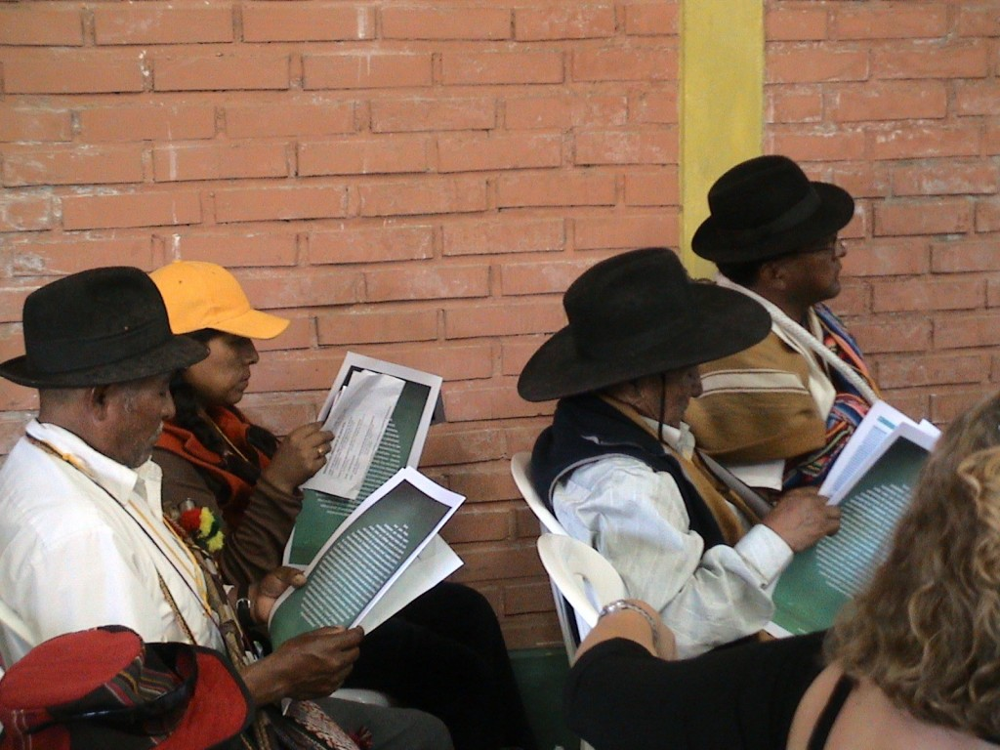

Get News from the Cochabamba Climate Conference Here!
We are currently in Cochabamba, launching the Spanish language edition of Turbulence at the World People’s Conference on Climate Change and the Rights of Mother Earth (April 19-22) [Program as PDF here]. If you are not in Cochabamaba, but would like a copy of the magazine, get in touch with us at editors@turbulence.org.uk
Updates from the Conference can be found at http://envivo.cmpcc.org.bo/ or by following the Bolivian UN Mission’s Twitter feed here. Via Twitter, the Conference can also be followed through the hashtags #cochabamba and #cmpcc. To make things easy, we’ve created a couple of Twitter widgets so you can follow posts with these hashtags right from this page.
Democracy Now! are going to be broadcasting daily from the conference. The video below will automatically update with the latest broadcast.
Also, bookmark this page because we will be updating it regularly with links to coverage of and commentary on the Conference (scroll to the bottom of the page). Watch this space! We may also be sending out the occasional Tweet direct from Cochabamba. Follow us, or check back regularly with the Twitter feed directly below.
Links to coverage and commentary
[Note: For the most recent updates, scroll to the bottom of the page]
The Guardian have an article by Andres Schipani and the paper’s environment editor, John Vidal, on the Cochabamba conference, including an interview with Bolivia’s Ambassador to the UN, Pablo Solon. You can read the article here.
Turbulence author, Gustavo Esteva, in a piece for Yes! magazine entitled Let’s See Ourselves written together with Juliette Beck, discusses the climate justice movement, a few days before the Cochabamba conference began. Gustavo wrote an article for Issue 1 of Turbulence, available online here and republished in our recent book, What Would it Mean to Win?, as well as a short article for Issue 5 of the magazine now available in Spanish and English.
La Via Campesina press release about the international peasant organisation’s Day of Action in Cochabamba on 17 April. Over 300 members of La Via Campesina (which translates as The Peasant Way) from around the world are participating in the Cochabamba conference. Their website can be found here.
Turbulence author, Marcela Olivera talks to Democracy Now!‘s Amy Goodman in Cochabamba about the tenth anniversary of the Bolvian ‘Water Wars’. You can watch the interview in the player below (it begins around 26 minutes in) and read a rush transcript here. The short article that Marcela wrote for Turbulence 5 along with her brother, Oscar, can be found here in English and here in Spanish.
Independent journalist Robert S. Eshelman has a piece up at the Huffington Post here providing an introduction to the Conference and some context. He’s in Cochabamba and Tweeting from http://twitter.com/RobertSEshelman Robert covered the Copenhagen Climate Conference in December for the Nation magazine.
On the Guardian‘s Comment is free site, independent writer Joseph Huff-Hannon has an article about the caravan of activists, scientists, teachers and journalists travelling from Buenos Aires to Cochabamba for the climate Conference.
The academic and freelance journalist, Tina Gerhardt, has a piece on Alternet.org about the tenth anniversary of the Bolivian ‘Water Wars’.
Carbon Trade Watch are launching a book, Carbon Trading: How it Works and Why it Fails, at the Cochabamba Conference. It is available in both hard copy and as free download in Spanish as well as English from their website here.
The Oakland Local website, a news and information hub set up by a coalition of non-profit and community organisations in Oakland in the San Francisco Bay Area, has some photos from the Conference up here.
Frank Chavez has an article up on the Inter Press Service (IPS) website, providing some background to the conference, explaining the way it’s been organised, some of the prominent attendees expected, and the outcomes that are hoped for. You can read the article here, it’s also been reposted on the UpsideDownWorld.org website which is probably also worth keeping an eye on for further news from the Conference.
Craig Mauro reports, in this video, from the Cochabamba Conference for the English Al Jazeera website here.
For those who can read German, the socialist daily, Neues Deutschland, are carrying an article by Susanne Götze about the Conference here. The paper is also running an interview with Jorge Cortes (click here). Cortes is the Direction of the CEADESC Research Centre in Cochabamba and has been involved with the organisation of the climate Conference. Die tageszeitung‘s (taz) Felix Lee also has a comment piece on the Conference, while the paper’s Gerhard Dilger reports from Cochabamba.
The World Development Movement are blogging from Cochabamba here.
Turbulence editor Tadzio Mueller is blogging for the German daily newspaper die taz from Cochabamba. You can read his posts here and here. Tadzio has previously written for Turbulence on the climate justice movement (see Issue 4) and most recently debated the Green New Deal with Frieder Otto Wolf (see Issue 5, or the new Spanish edition of Turbulence).
Tina Gerhardt has an article up at the Grist.org environmental news website where, reporting from the Conference, she summarises Morales’ four proposals for addressing climate change at a global level: reparations; an international climate court; a Universal Declaration on the Rights of Mother Earth; as well as development and the transfer of clean technology.
The Democracy Centre, based in San Francisco, are blogging the Conference here.
The Guardian website is carrying an article (here) by Claudia Lopez Pardo on some of the discussions about mining and other extractive industries taking place at an event outside the official conference.
Robert S. Eshelman has another piece over at the Huffington Post, rounding up the Bolivian strategy suggestions for the international climate negotiations. The piece also describes the emphasis being placed, by Morales amongst others, on the need for cooperation between social movements and governments. You can read the piece here.
The Guardian have a collection of photos from the Cochabamba Conference here.
There is an unofficial translation of an article by Eduardo Gudynas penned ahead of the Conference here. It’s entitled, A Necessary Reflection on the Climate Change Meeting and raises a number of concerns about: the extent to which civil society will be involved with the Conference’s closing declarations; the geopolitical role of Brazil and others (China, India, South Africa, etc…) in international climate politics, which has so far received relatively little attention by social movement and civil society organisations; and the disjuncture between Bolivia’s stance on climate change in the international sphere and their domestic politics. The article has been translated by Dawn Paley.
dr.woooo is bookmarking articles related to the Cochabamba Conference on his delicious page here. The articles are largely (though not exclusively) critical, and coming from anarchist/ulta-leftist/radical-left/etc… perspectives.
Only a very brief mention of the Conference in Britain’s socialist daily, the Morning Star, in their World in Brief roundup here.
The Indigenous Environmental Network have issued a press release in English and Spanish about the participation of North American indigenous peoples in the Conference. Both versions can be found here.
[Semi-off topic announcement: At 1pm Pacific Time today (Wednesday 21 April), Turbulence editor Tadzio Mueller will be discussing our new book, What Would it Mean to Win?, green capitalism and the global crisis on KPFA radio’s Against the Grain show. If you are in Northern or Central California, you can find the show on (KPFA) 94.1 FM or (KFCF) 88.1 FM. For everyone else, you can listen to the show being live streamed online here, or else check back in at the same link to listed to the archived show after it has been broadcast.]
The Huffington Post have a posted a video from the Conference’s opening ceremony (only available from some locations).
There’s a polemical piece by Suzie Wylie and Jonathan Neale on the British Socialist Workers’ Party (SWP) website here, claiming that the international Trade Union Congress has discouraged its British affiliates from attending the Conference and suggesting many NGOs are reluctant to take part in a movement led by Morales because it might challenge the US.
Check out the picture above, showing the Spanish issue of Turbulence being read at the conference. More pictures can be found on our Facebook page here.
{kind=link}
Portuguese sociologist, Boaventura de Sousa Santos, who has long been involved with the World Social Forum, talks to Democracy Now! from Cochabamba. Among the topics on which he touches are indigenous concepts such as sumak kausay – which roughly translates as ‘the good living’ in English or buen vivir in Spanish – being discussed at the conference. The concept also, incidentally, comes in for discussion in the editorial to our fifth issue of Turbulence (here), as well as Walter Mignolo’s article published in the same issue (here).
Friends of the Earth International have issued a press release about the Conference, claiming that the Bolivian government have increased their moral authority of climate change.
Andres Schipani reports for the Guardian on Morales’ “Planet or Death” speech at the Conference.
Andreas Behn has another report (in German) from the Conference in Neues Deutschland here.
Al Jazeera‘s English language website is reporting some positive words on the Conference coming from the UN here.
Another (German language) post on die taz‘s blog here by Tadzio Mueller, one of the Turbulence editors in Cochabamba, discussing the proposals for the future of the climate justice movement being debated in Cochabamba. They include a mobilisation to the next UN Climate Conference in Cancun, Mexico, later this year and/or a day of action on climate change in October.
In an article in the Nation, Naomi Klein compares the democratic process of Cochabamba to last year’s climate conference in Copenhagen here.
Evo Morales is coming in for a good deal of mocking and criticism for his remarks about the supposed effects of eating chicken on men’s sexual orientation: here (Guardian), here (Pink News), here (ForeignPolicy.com) and here (die taz, where Turbulence‘s Tadzio Mueller also mentions the negative reaction the comment received in the Bolivian press).
Joseph Huff-Hannon has a second Comment is Free article up on the Guardian‘s website, this one talking about today’s Presidential football match (including photos).
Roberto Lovato (who regularly contributes to the Nation) has published an article with the Huffington Post on discussions in Cochabamba as to the civilisational roots of the climate crisis and the proposal to expand global rights to include the Universal Rights of Mother Earth.
For German readers, Gerhard Dilger has a piece in die taz (here) on some of the outcomes from the Conference – including the clear rejection of the UN’s REDD programme (Reducing Emissions from Deforestation and Forest Degradation in Developing Countries). REDD was criticised as both promoting neoliberal, market based mechanisms for dealing with deforestation as well as defining monocultures of crops such as eucalyptus as forests. (For an English and Spanish language summary of the discussions about REDD at the conference, check out this press release from the Indigenous Environmental Network.) Dilger also has an article in Neues Deutschland about the conference.
Joshua Kahn Russell has an article up on Grist.org about Earth Day 40 years on and the Cochabamba Conference here, including a summary of the main issues being addressed and a collection of links.
The Guardian have just posted a video with English subtitles showing some of Morales’ opening speech to the Conference.
Evo Morales has an op-ed in the LA Times, published the day after the Conference came to a close.
Joseph Huff-Hannon has a third (and presumably final) article from Cochabamba up on the Guardian‘s Comment is Free website here, discussing the presence of indigenous perspectives at the Conference.
Democracy Now!‘s presenter, Amy Goodman, has an article about the 10th anniversary of the ‘Water Wars’ and the Cochabamba conference here (and you can listen to a podcast version here).
Final Declaration from the Conference here in Spanish and here in English.
[This thread is no longer being updated.]
Links: World People’s Conference on Climate Change and the Rights of Mother Earth | The Conference online | Climate Justice Now | Climate Justice Action | La Via Campesina | UpsideDownWorld.org | Grist.org | Carbon Trade Watch | World Development Movement
Tweet
comments
-
Who we are

Turbulence is a journal/newspaper that we hope will become an ongoing space in which to think through, debate and articulate the political, social, economic and cultural theories of our movements, as well as the networks of diverse practices and alternatives that surround them. Read more here
-
Turbulence on Myspace